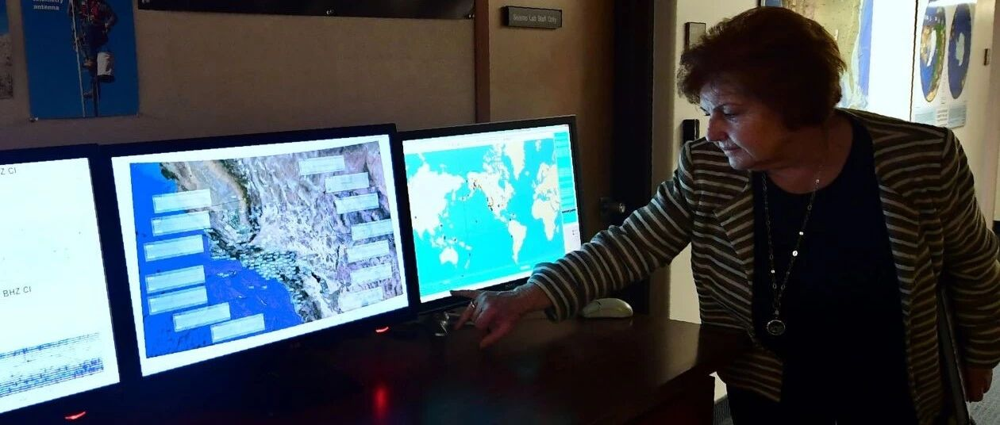

华尔街日报：特朗普政府力求尽快部署地震预警传感器
特朗普政府力求尽快部署地震预警传感器
Jim Carlton
华尔街日报
Oct. 10, 2018 3:32 p.m. 美国东部时间
赵鹏举 译
美国内政部长下令终止阻碍在西海岸全面部署地震预警监测系统的监管拖延

今年5月，夏威夷火山国家公园的工作人员因地震后危险的火山活动而将游客拒之门外
图：弗雷德里克·J·布朗/法国新闻社/盖蒂图片社
特朗普政府已下令在联邦政府土地上加速部署地震探测设备，以帮助西海岸城市为专家所说的在未来几年几乎肯定会爆发的地震灾难做准备。
根据《华尔街日报》获得的美国内政部长 Ryan Zinke 于10月5日下达的命令，联邦政府有关这种设备的许可规定正在精简，以便能在从圣地亚哥到阿拉斯加州安克雷奇等人口中心附近的国家公园和土地管理局迅速安装这种设备。该命令也适用于夏威夷的火山活动监测设备。
在如旧金山的金门国家娱乐区这样的联邦财产上的传感器，与州政府和地方政府的努力相配合，共同建立了一个综合系统。
被称为“地震预警”的美国地质勘测系统，能提前一分钟发出地震即将袭来的警报。据美国联邦官员说，自2006年以来已在美国部分地区部署了这种地震预警系统，但至今只完成了一半左右。一个主要原因是，从各个机构获取所需许可的拖(che)延(pi)时间多达两年。
内务部长 Zinke 先生让包括美国土地管理局、国家公园管理局和美国鱼类和野生动物管理局等机构在内的的主管们在30天内确保消除在安装地震预警传感器方面的监管障碍，并为消除障碍提供帮助。
此举是由于据科学家们所说，西海岸大部分地区仍面临随时可能发生的灾难性地震的威胁。美国内政部负责水资源和科学事务的副部长 Austin Ewell III 在周三接受采访时说：“我们想说，看啊，这是一个保护我们人民的机会！”
地震发生后发出的冲击波能够被这些传感器接收，在地震波到达人口稠密的地区时，传感器便可以通过手机和其他电子设备发出警报通知。Ewell 先生说，这给了关闭加油站和通勤列车等基础设施一定的时间，同时提醒人们逃离电梯，提醒医生暂停外科手术。
在日本和墨西哥的地震中，类似的技术拯救了大量的生命。
华盛顿特区和萨克拉门托（美国加州首府）已经通过了为该系统增加资金投入的法案，该系统的建立预计将耗资约4,000万美元，每年运营成本约为3,000万美元。美国地质调查局（USGS）的官员说，完成整个网络需要在合适的位置布置共1675个传感器，最大的缺额位于波特兰和西雅图等太平洋西北部城市，约占总数的一半。
旧金山湾区的地震预警系统已经基本完成，而在南加州，该系统正在接受进一步的测试。洛杉矶市长 Eric Garcetti 今年早些时候曾表示，该市计划在2018年年底之前部署地震预警系统。
联邦官员没有给出该地震预警系统全面运行的时间表。Ewell 先生说：“希望这个系统能够尽快全面运行。”

加州理工学院地震实验室的 Margaret Vinci 正指着一排监测地震活动的地震预警显示屏
图：弗雷德里克·J·布朗/法国新闻社/盖蒂图片社

赵鹏举
相关研究
长按识别二维码，关注我们的科研动态